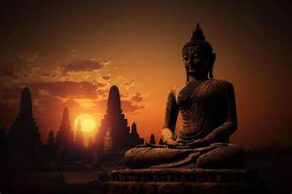

Welcome to Bihar – Fairs and Festivals
ü™î Fairs and Festivals of Bihar ‚Äì A Cultural Delight üéâ
üïâÔ∏è Religious Festivals ‚Äì Sacred Devotion and Unity
üåû Chhath Puja: A Deeper Insight into the Grand Festival of Bihar
Chhath Puja is one of the oldest and most significant Hindu festivals dedicated to the Sun God (Surya) and Chhathi Maiya, observed primarily in Bihar, Jharkhand, Uttar Pradesh, and Nepal. It is a festival that reflects an unshakable bond between nature and human life. Unlike other Hindu festivals that involve idol worship, Chhath Puja is about worshiping the visible source of energy – the Sun, who sustains life on Earth. The festival is believed to have originated during the Vedic period, with references in ancient texts indicating that sages performed rituals to worship the Sun to gain spiritual energy and mental clarity. The rigorous fasting and offerings to the Sun signify purification of the body and mind, promoting well-being and positivity.
Sonepur Mela –
Asia's largest cattle fair, held near the confluence of the Ganga and Gandak rivers, blending spirituality with commerce.


Sama-Chakeva –
A winter festival celebrated by women to honor sibling bonds, with colorful clay idols and songs.
Maha Shivratri –
Devotees observe fasts and offer prayers to Lord Shiva at revered temples like Baidyanath Dham.


Buddha Purnima –
Celebrated at Bodh Gaya, where Lord Buddha attained enlightenment. Monks and devotees gather to pay homage.
Ramnavami – Commemorating the birth of Lord Rama, with prayers and bhajan recitals.

Durga Puja – Celebrated with grandeur, especially in Patna, marked by elaborate pandals and processions.
üåæ Harvest and Agricultural Festivals ‚Äì Celebrating Nature‚Äôs Abundance
Makar Sankranti –
A harvest festival marking the transition of the sun into Capricorn, celebrated with kite flying and sesame sweets.
Karma Festival –
A tribal festival where devotees worship the sacred Karma tree, praying for prosperity and well-being.
Shravani Mela –
Pilgrims undertake a month-long Kanwar Yatra to offer holy water to Lord Shiva at Deoghar’s Baidyanath Dham.


Basant Panchami – Dedicated to Goddess Saraswati, marking the onset of spring, celebrated with kite flying.
Champa Festival – Celebrated in Bhagalpur after the harvest, accompanied by folk music and local festivities.
üïäÔ∏è Tribal and Folk Fairs ‚Äì Preserving Bihar‚Äôs Rich Heritage
Madhubani Festival –
Celebrating the vibrant art of Madhubani with cultural performances and exhibitions.
Chitragupta Puja – Celebrated by the Kayastha community, honoring Lord Chitragupta, the divine record-keeper.

Sita Vivah Panchami – Celebrated in Sitamarhi, reenacting the divine marriage of Lord Rama and Goddess Sita.
Mahavir Jayanti – Commemorates the birth of Lord Mahavira, celebrated at Pawapuri and other Jain pilgrimage centers.
üé® Arts and Crafts Festivals ‚Äì A Tribute to Bihar‚Äôs Artistry
Madhubani Art Fair –
An exhibition of intricate Madhubani paintings, showcasing Bihar’s artistic legacy.
Handicrafts and Textile Festival –
A showcase of Bihar’s exquisite handloom and textile artistry, reflecting ancient craftsmanship.
Bodh Gaya Cultural Festival –
A convergence of art, culture, and spirituality, highlighting Bihar’s vibrant heritage.